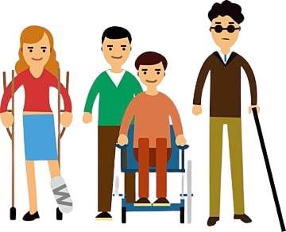
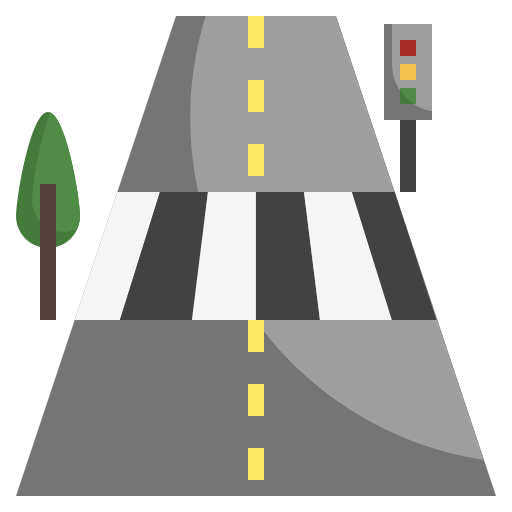
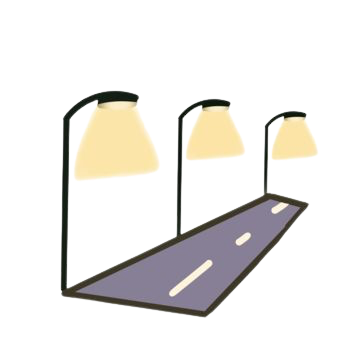

Home
About
Contact
Home
About
Contact
동행
통행 약자
어시스턴트
서비스
커스텀한 YOLOv8 모델을 사용하여
통행 시 피해야 할 장애물을 자동으로 검출하고
결과를 통행 약자에게 안내합니다

분석할 동영상을 선택하세요


선택한 원본 비디오
사용 중인 브라우저는 비디오 태그를 지원하지 않습니다.
사물 검출 후 결과 비디오
사용 중인 브라우저는 비디오 태그를 지원하지 않습니다.